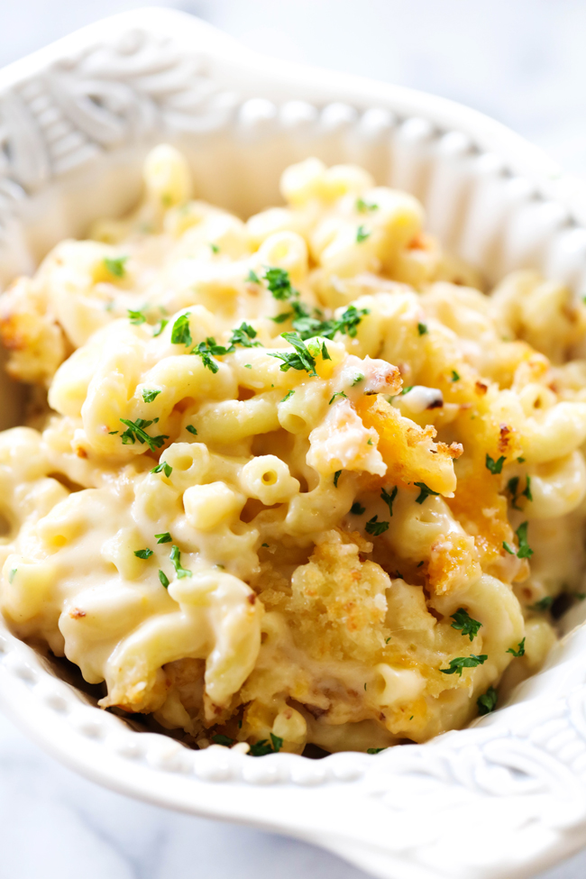

Instant Pot Mac and Cheese

Description
This mac and cheese is very cheesy and is a great base for many variations.
Ingredients
- 1 lb uncooked pasta
- 4 cups chicken broth
- 1 teaspoon garlic powder
- 1 teaspoon onion powder
- 1 cup heavy cream
- 1 cup grated parmesan
- 1 cup grated smoked gouda
- 1 cup shredded white cheddar
- 2 teaspoons truffle oil, optional
- 1-2 teaspoons kosher salt
More things you can add: diced green chillis or jalapenos , cooked crispy bacon, chunks of blue cheese, etc.
Steps
- Put the pasta, broth, garlic, and onion powder into the instant pot
- Lock, set to sealing position and cook on high pressure for 4 minutes
- Quick release the pressure, you may want to cover the valve with a towel to avoid pasta water spilling everywhere
- Add the cream (start with 3/4 cup and add more if you want it creamier), the cheeses, truffle oil if using, and salt to taste
- Stir well until fully mixed. Add any additional ingredients you may want now.
- Serve and enjoy